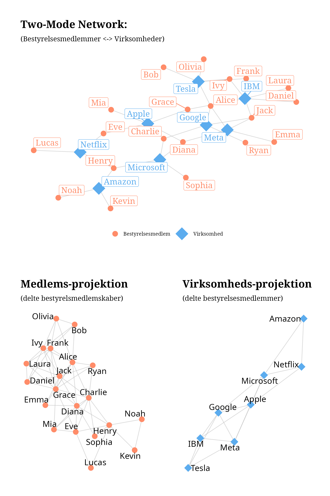
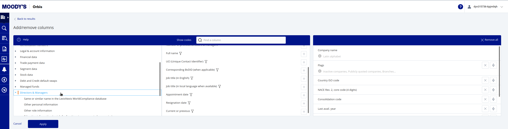
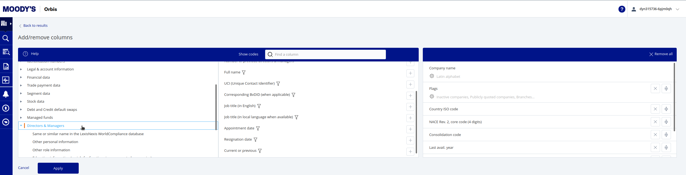
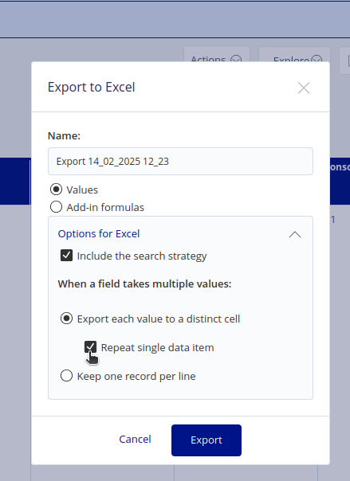
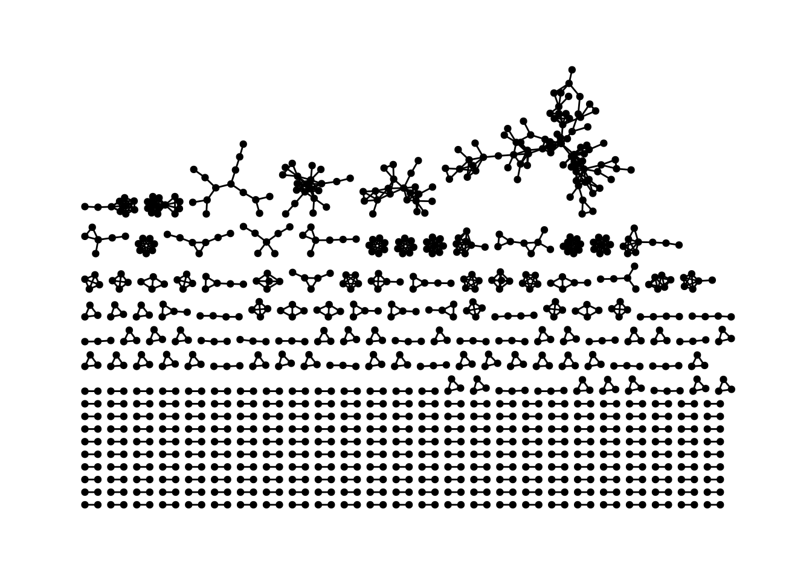
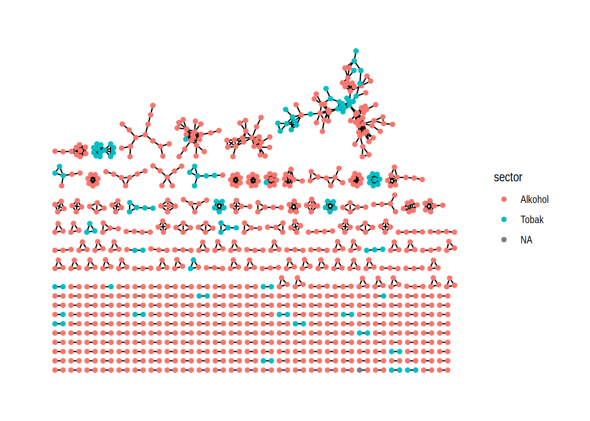
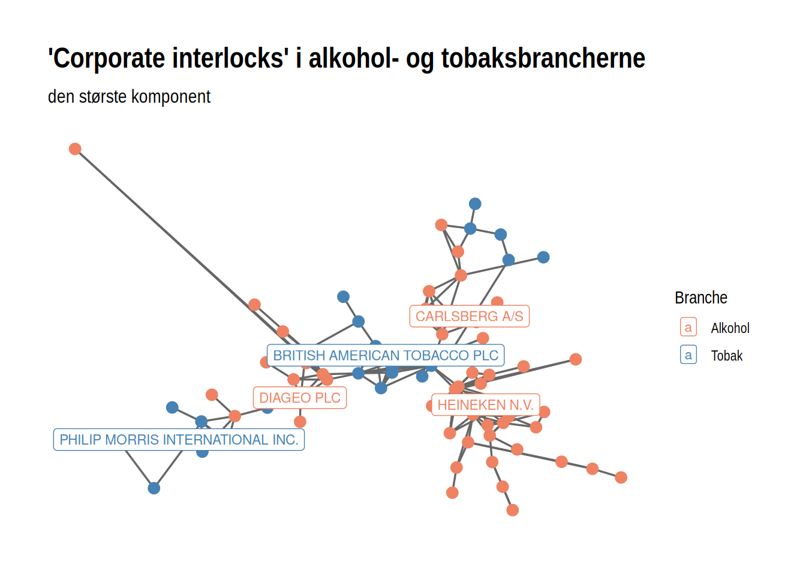
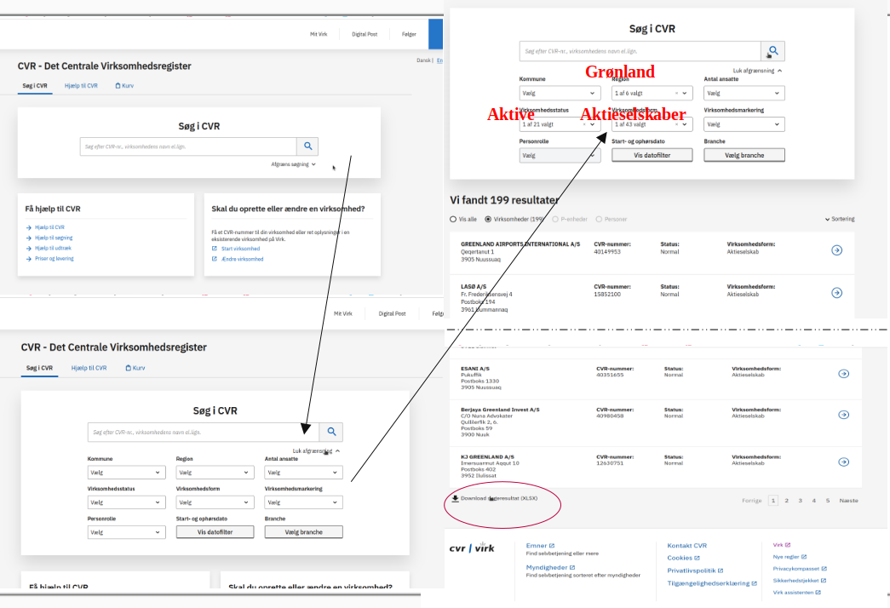
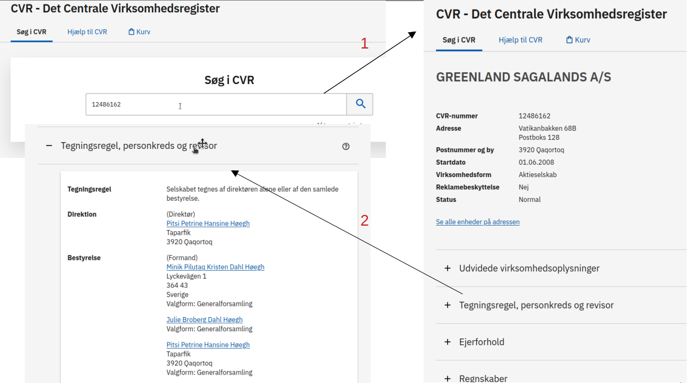

# install.packages("tidyverse")
# install.packages("igraph")
# install.packages("ggraph")
# install.packages("ggpubr")
# install.packages("readxl")
# install.packages("writexl")
# install.packages("RColorBrewer")
library(tidyverse)
library(igraph)
library(ggraph)
library(ggpubr)
library(readxl)
library(Matrix)
library(RColorBrewer)Indsamling af netværksdata og konstruktion af netværksobjekter
Vigtige spørgsmål ift netværksdata
Note
Som med al anden indsamling af samfundsvidenskabelig data er det også med netværksanalyse meget vigtig at man forholder sig til en række metodologiske og videnskabsteoretiske spørgsmål, allerede i den fase, hvor man overvejer hvilken data man vil indsamle(/bruge) og hvordan man vil indsamle(/bruge) det!
I social netværksanalyse behandler vi data relationelt, dvs. vi har nogle enheder (mennesker, virksomheder, ‘ideer/begreber’, hjemmesider), som vi antager indgår i nogle relationer, som vi gerne vil strudere på en systematisk måde. Det betyder at vi på et visuelt plan hele tiden arbejder med punkter (vertices eller noder) der er forbundet (eller ikke forbundet) af streger (edges):


Det rejser nogle vigtige spørgsmål:
Hvad er en relation?
- Er det medlemskaber (som i figuren til højre, de to blå punkter er begge medlem af det røde punkt), er det venskaber/kendskaber (som i figuren til venstre de tre blå punkter kender hinanden). Er relationen samtidig? dvs. Er de to blå punkter fx. medlem af den samme klub nu(!) eller er det nok (for vores analyse) at de begge har været med på et tidspunkt, men ikke nødvendigvis samtidig? En forbindelse kan også udtrykke udveklingsrelationer. Er det fx to virksomheder der sender penge eller varer til hinanden? Eller kampagnedonationer til politikere/partier? Relationer kan også være mere abstrakte, fx. relationer mellem ideer og begreber, fx semantiske relationer eller referencer - “forfatter B” trækker på “forfatter A”s ideer osv. På mange måder mulighederne uendelige. Det vigtigste er at man er eksplicit og tydelig omkring hvad man mener man kigger på. Det har nemlig stor betydning for om man faktisk viser det man tror man viser i sine analyser. Det er også afgørende om tænker at relationen har en retning, som i eksemlet med forfatter B, der trækker på forfatter As ideer. Der kan man sige at relationen fra B til A (eller den anden vej for den sags skyld; er det det at B trækker på A, der er afgørende eller er det det at ideen flyder fra A til B der er afgørende?). Eller er relationen gensidig, når A og B er vener. Har relationerne forskellig vægt? Kender A og B fx hinanden mere eller bedre end B kender C osv.?
Hvad er et punkt?
- I skal også forholde jer til hvad enheden i analyserne er? Hvad er udgør et punkt? Og hvilke punkter skal med? Hvis vi kiggede på venskaber i en klasse, så er punkterne måske klassens elever. Men hvad hvis elev A og B ikke nævner hinanden som venner, men begge nævner X fra parallelklassen? Skal X så med? Skal hele parallelklassen med? Eller hele skolen? Og måske også naboskolen? Det er et helt afgørende spørgsmål i netværksanalyse: Hvor starter og slutter netværket?
Hvilken slags netværk er det vi kigger på?
- Som vi tidligere har talt om kan vi have både netværk mellem en enkelt type af aktører og netværk mellem flere typer af ‘aktører’. Ofte har vi måske indsamlet et netværk med to distinkte typer (et bipartite netværk), fx bestyrelsespersoner og deres virksomheder, eller forfattere og deres begreber osv. I en analytisk sammenhæng kunne vi måske være interesseret i at rette blikket mod (de formidlede) relationer mellem én netværkets enheder. Det kræver en så kaldt projektion af netværket.

En vigtig del af en netværksanalyse er at forholde sig til spørgsmål som disse. Hvilken mekanisme er vi interesseret i at studere. Er vi optaget af en epidemologisk kortlægning af risikoen for spredning af coronavirus? Ja men, så vi nødt til at tænke relationen som en eller anden grad af fysisk kontakt. Er vi interesseret i indflydelse på beslutninger, så er relationen måske medlemskab i organer, hvor der træffes beslutninger. Er vi interesseret i popularitet og anerkendelse, så er relationen vi skal lede efter måske oplevede venskaber. Vil vi studere muligheder for innovation i virksomheder, så skal vi måske forstå relationerne som et flow af vidensdeling mellem individer eller teams.
Selvom netværksanalyse på papiret ‘bare’ er punkter og streger er det altså utrolig vigtigt at forholde sig til hvad punkterne og stregerne repræsenterer.
Kilder til Netværksdata:
Lod os kigge nærmere på hvilke typer af data I kan bruge i jeres eksamensopgaver. Der er grundlæggende tre muligheder:
- I kan bruge Danish Elite Network 2017 (Ellersgaard og Larsen m.fl), og finde et spændende subset af dette, I kan analysere
- I kan bruge CBS’ adgang til Orbis og definere og downloade et datasæt herfra.
- I kan bruge andre tilgængelige kilder eller indsamle jeres egen data (the sky is the limit!).
I det følgende skal vi se nærmere på de forskellige mulighedre:
men først indlæser vi lige de R-pakker vi får brug for (som altså skal installeres først, hvis de ikke allerede er det).
Vi skal også indlæse et script, der indeholder funktioner skrevet specifikt til dette kursus. Det drejer sig om filen custom_functions.R i mappen “/functions”.
Note
Et script indlæses med funktionen source(, ...echo = FALSE), hvor echo = FALSE betyder at scriptet indlæses uden at vise indholdet.
source("functions/custom_functions.R", echo = FALSE)Danish Elite Network 2017 (den17)
I mappen "/data" i R projketet finder i filen den17-no-nordic-letters.csv. Den kan også downloades her:
Indlæs data med read_csv
den <- read_csv("data/den17-no-nordic-letters.csv")den17 er et affiliation datasæt, som indeholder bestyrelsesposter og og andre medlemskaber i (stort set) alle (relevante) virksomheder, organisationer, fonde, insitutioner, råd, nævn, kommissioner osv. Dvs alt lige fra Kattens Vaern over A.P. Moeller - Maersk og Novo Nordisk til regeringens sikkerhedsudvalg osv. Hver række i datasættet repræsenterer en position, dvs. en person med en rolle i organisation:
den %>% head()# A tibble: 6 × 10
name affiliation role gender tags sector type cvr_person cvr_affiliation
<chr> <chr> <chr> <chr> <chr> <chr> <chr> <dbl> <dbl>
1 Lars E… & co Memb… Men Corp… Corpo… Virk… 4006470500 21705535
2 Mikael… & co Exec… Men Corp… Corpo… Virk… 4004059627 21705535
3 Thomas… & co Chai… Men Corp… Corpo… Virk… 4004304040 21705535
4 Thomas… & co Memb… Men Corp… Corpo… Virk… 4004062718 21705535
5 Hans J… 15. juni f… Chai… Men Char… Found… Fond… NA 15232102
6 Niels … 15. juni f… Vice… Men Char… Found… Fond… 4000067364 15232102
# ℹ 1 more variable: description <chr>Vi kan bruge glimpse() til lige at se hvad data ellers indeholder:
den %>% glimpse()Rows: 56,849
Columns: 10
$ name <chr> "Lars Eivind Kreken", "Mikael Ernst Joergensen", "Thom…
$ affiliation <chr> "& co", "& co", "& co", "& co", "15. juni fonden (Best…
$ role <chr> "Member", "Executive", "Chairman", "Member", "Chairman…
$ gender <chr> "Men", "Men", "Men", "Men", "Men", "Men", "Women", "Wo…
$ tags <chr> "Corporation, Media, Marketing, Commercials, Communica…
$ sector <chr> "Corporations", "Corporations", "Corporations", "Corpo…
$ type <chr> "Virksomhed (CVR)", "Virksomhed (CVR)", "Virksomhed (C…
$ cvr_person <dbl> 4006470500, 4004059627, 4004304040, 4004062718, NA, 40…
$ cvr_affiliation <dbl> 21705535, 21705535, 21705535, 21705535, 15232102, 1523…
$ description <chr> "Automatisk CVR import at 2016-03-12 17:45:41: BESTYRE…Alle ‘organisationer’ i datasættet er kodet med en række tags som kategoriserer organisationerne i forskellige emner.
den %>% select(name, affiliation, tags)# A tibble: 56,849 × 3
name affiliation tags
<chr> <chr> <chr>
1 Lars Eivind Kreken & co Corporation, Media, Mar…
2 Mikael Ernst Joergensen & co Corporation, Media, Mar…
3 Thomas Hoegeboel & co Corporation, Media, Mar…
4 Thomas Hoffmann & co Corporation, Media, Mar…
5 Hans Joergen Rasmusen 15. juni fonden (Bestyrelse) Charity, Culture, Found…
6 Niels Thomas Heering 15. juni fonden (Bestyrelse) Charity, Culture, Found…
7 Else Mikkelsen 55281 15. juni fonden (Bestyrelse) Charity, Culture, Found…
8 Helene K. Hjenner 15. juni fonden (Bestyrelse) Charity, Culture, Found…
9 Jette Baagoee 15. juni fonden (Bestyrelse) Charity, Culture, Found…
10 Zeb Meier Watz 2 Timer om ugen (Bestyrelse) Education, Youth, egmon…
# ℹ 56,839 more rowsDisse emne-tags kan bruges til at udvælge subset af data til forskellige analyser. I custom_functions.R filen, vi indlæste tidligere, ligger en funktion der giver et overblik over hvilke tags den17-datasættet indeholder: nemlig show.all.tags(), som viser hvor mange positioner (poster) i hvor mange organisationer, der knytter sig til hvert tag.
den %>% show.all.tags() %>% head(15) Positions affiliations
A-kasse 193 14
Academics 927 71
Actors 65 7
Administration 789 66
Africa 13 1
Alternative 45 8
Animals 397 50
Architecture 1419 130
Art 753 100
Artists 245 30
Asia 5 1
Award 40 6
Baltic countries 11 2
Banks 899 69
BILH 190 45hvis I skriver:
den %>% show.all.tags() %>% enframe() tags i kombination med sector og evt. også type type er en god mode at finde frem til et spændende subset af virksomheder og eller personer.
…lad os se hvad variablen sector indeholder. Til det kan vi bruge verbet count(), som optæller cases på en given variabel.
den %>% count(sector)# A tibble: 13 × 2
sector n
<chr> <int>
1 Commissions 814
2 Corporations 9524
3 Events 2270
4 Family 207
5 Foundations 6993
6 Municipal 320
7 NGO 17720
8 Organisation 227
9 Parliament 1087
10 Politics 37
11 State 13764
12 VL_networks 3803
13 <NA> 83…lad os også se på type, der giver en alternativ inddeling .
den %>% count(type) # A tibble: 10 × 2
type n
<chr> <int>
1 Begivenhed 2086
2 Folketing 241
3 Fond (CVR) 1783
4 Kommission 772
5 Netvaerk (VL-gruppe) 4318
6 Organisation 14819
7 Snowball 11
8 Stat 10419
9 Virksomhed (CVR) 9722
10 <NA> 12678For eksemplets skyld lad os begynde med at ‘subsette’ datasættet, så vi kun beholder de 7989 rækker hvor en ‘affiliation’ har værdien Corporations på sector variablen.
den_corp <- den %>% filter(sector == "Corporations")lad os se på hvilke tags vi kan finde her:
show.all.tags(den_corp) %>% head(10) Positions affiliations
Animals 37 4
Architecture 93 14
Banks 384 40
BILH 190 45
Business 96 14
BYGG 282 43
Charity 16 1
Children 8 1
Clothing 11 1
Commerce 46 6funktionen has.tags() er en hjælpefunktion, der giver os enten (... result = "affil") en liste af navne på de organisationer, der har det eller et af de pågældende tags, eller (... result = "name") en liste af navne på individer der er i en af disse organisationer, eller (... result = "den") et nyt datasæt med kun poster i organisationer med de relevante tags. Option’en ...mode = bruges til at fortælle om vi vil have alle de poster der har der har et af tags’ne (...mode = "or"), eller om vi ønsker at posterne skal have alle tags’ne (...mode = "and"):
Lad os lave en streng vector med de Tags vi gerne vil kigge efter.
tags <- c("Banks", "FINA", "Finance", "Investment", "Insurance")Hvis vi bruger result = "affil" sammen med mode = "or" får vi alle de virksomheder, der har et af de pågældende tags:
den_corp %>% has.tags(tags, result = "affil", silent = TRUE, mode = "or") %>% head(10) [1] "A/S DANSK ERHVERVSINVESTERING" "ALD Automotive"
[3] "Aleris (Bestyrelse)" "Alm. Brand"
[5] "Alpha Holding" "ALTOR EQUITY PARTNERS A/S"
[7] "AP Pension" "Arbejdernes Landsbank"
[9] "Axcelfuture (Advisory Board)" "Bank DNB Nord" Hvis vi bruger result = "name" sammen med mode = "or" får vi alle de personer, der har poster i virksomheder med et af de pågældende tags:
den_corp %>% has.tags(tags, result = "name", silent = TRUE, mode = "or") %>% head(10) [1] "Asger Ib Mardahl-Hansen" "Hans Ole Jensen"
[3] "Lars Groenborg Eskesen" "Michael Noergaard"
[5] "Thorkild Engell Jensen" "Gilles Jean-Noël Momper"
[7] "Guillaume Joseph Emile de Leobardy" "Michael John Masterson"
[9] "Tim Torben Albertsen" "Björn Nordenvall" Hvis vi bruger result = "den" sammen med mode = "or" får vi et subset af data med alle de poster der har et af de pågældende tags. Det data assigner vi (<-) til et nyt dataobjekt den_fina:
den_fina <- den_corp %>% has.tags(tags, result = "den", silent = TRUE, mode = "or")
dim(den_fina)[1] 989 10Orbis
En anden kilde til (netværks-)data om virksomheder er Orbis. Orbis er en database der indeholder information om virksomheder fra hele verden - omkring 400.000.000 selskaber. Databasen trækker data fra mere end 170 forskellige kilderm som standardiseres og linkes på en måde der muliggør sammenlinging. På virksomhedsniveau indeholder orbis blandt meget andet geografisk data, juridisk data, finansiel data, ejerskabsdata mv. om den enkelte virksomhed. Fra et netværksperspektiv er databasen interessant fordi den desuden indeholder (aktuel og historisk) data om virksomhedernes bestyrelse og direktion (m.v.). I det følgende skal vi se hvordan man trækker et bestyrelses-(netværks-)datasæt fra orbis.
Note
Som med al anden data (særligt data man ikke selv har frembragt), skal man med Orbis være opmærksom på en række
Skim evt. denne rapport fra OECD om Orbis’ dækningsgrad. Eller tag et kig på (Heemskerk et al. 2018) om bl.a. ‘completeness’ og problemer med ‘entity resolution’ - optræder det samme firma eller den samme person flere gange med forskllige versioner af det navn. Det er ikke problemer I behøver at løse, men noget det er værd at bemærke, når man præsenterer den data man analyserer!
Orbis kan tilgås via jeres login til CBS’s bibliotek: Orbis via cbs
At ‘bygge’ et søgefilter på Orbis
Det første man skal tænke over er hvilke filtre, der er nødvendige for at hente det subset af virksomheder man er interesseret i. Der er selvfølgelig et hav af muligheder.

- Under Company, kan man under fx vælge Standardized legal forms vælge kun ‘Private limited companies’ eller også ‘Public limited companies’. Man kan også under Number of employees vælge kun at kigge på virksomheder af en hvis størrelse.
- Under Location kan man sætte forskellige geografiske filtre, både lande, regioner m.v., men også forskellige klassifikationer.
- Under Activities and industry kan man under Industri classifications vælge mellem forskellige branche-klassifikationer og herunder udvælge en (eller flere) bestemt(e) branche(r). Man kan desuden under Entity type afgrænse virksomhedstype yderligere. En anden mulighed er at man definerer ‘fritekst’ søgning under Activity text search, hvor man under ‘scope’ vælger hvilke datafelter, der skal søges i og under ‘Free text’ skriver hvad der skal søges efter.

Når man har ‘bygget’ sit filter kan man se hvad de forskellige filtre gør og hvad de til sammen giver af resultat. Næste skridt er View results 
Tilføj bestyrelsesoplysninger til vores data
Her kan vi se alle de virksomheder, der lever op til vores søgekriterier. Det vi gerne vil nu er at tilføje bestyrelsesdata. Klik på Add/remove columns øverst til højre.  Scroller man lidt ned i venstre kolonne og klikker på feltet Directors and managers, får man i den midsterste kolonne en række valgmuligheder:  Vælg som minimum 1) Full name, 2) UCI, 3) Job title, 4) Current or previous.
Scroller man lidt ned i venstre kolonne og klikker på feltet Directors and managers, får man i den midsterste kolonne en række valgmuligheder:  Vælg som minimum 1) Full name, 2) UCI, 3) Job title, 4) Current or previous.
Under Other personal information og Other role information i venstre kolonne kan man tilføje yderligere information om personen og dennes rolle. På personniveau fx. køn og nationalitet mv. På rolleniveau kan det være nyttigt at tilføje ‘Type of role’ og ‘Board, committee or department’ og evt. ‘Level of responsibility’, da det kan give mulighed for at fokusere kun på bestyrelse og direktion.
Hvis man klikker på det lille filter-ikon under fx ‘Full name’ i den venstre kolonne får man mulighed for at filtrere på rollerne. Det kan være nyttigt her at forholde sig til om man både vil have nuværende og tidligere roller med. Har man tilføjet variablen Current or previous, kan man altid filtrere senere, men hvis man ikke gør det her skal man være opmærksom på at data kommer til at indeholde mange rækker (!)
Det er også muligt at tilføje yderligere virksomhedsdata.
Når de variable man gerne vil have med er valg, trykker man Apply og så er vi klar til at eksportere data.
Eksporter data til xlsx
Klik på “Excel”.. I den eksport-menu, der kommer op er det vigtigt, at man under Options for excel vælger ‘Repeat single item data’ inden man trykker Export.


Når Orbis har klargjort data, kan man downloade filen til sin computer.
Eksempel med alkohol og tobak fra Orbis
Jeg har tidligere downloadet et datasæt med alle aktive, public limited companies med branchekoderne Alkohol og tobak (‘Manufacture of beverages’ NACE#11(-soft drinks 11.0.7) & ‘Manufacture of tobacco products’ NACE#12)
I kan downloade datasættet her: Download Data og lægge filen i data mappen i vores Rprojekt mappe. Filen kan også hentes på Canvas.
Der er også en ny funktion i custom_functions scriptet, read_orbisxlsx(), det er en genvej til at indlæse datafiler fra Orbis. For at bruge den funktion skal I download en ny udgave af custom_functions her Download file og lægge den i functions/ mappen i Rprojekt mappen (dvs. erstatte den anden). Filen kan også hentes på Canvas. Når filen ligger i functions mappen kan vi “source” den og anvende funktionen.
source("functions/custom_functions.R", echo = FALSE)Nu kan vi indlæse orbis-filen tobaco_and_alcohol.xlsx ved at indsætten stien til filen (data/tobaco_and_alcohol.xlsx) med read_orbisxlsx():
df <- read_orbisxlsx(path = "data/tobaco_and_alcohol.xlsx")Warning: Unknown or uninitialised column: `assets`.Orbis variable names updated:
DMFull name => name
DMUCI (Unique Contact Identifier) => person_id
Company name Latin alphabet => affiliation
Country ISO code => affiliation_country
DMJob title (in English) => role
DMBoard, committee or department => board_type
DMType of role => role_type
DMLevel of responsibility => role_level
DMAppointment date => appointment
DMResignation date => resignation
DMCurrent or previous => role_status
NACE Rev. 2, core code (4 digits) => sector
Operating revenue (Turnover) th USD Last avail. yr=> revenue
Number of employees Last avail. yr => n_employees
CSH - Orbis ID number => csh_orbis_id
CSH - Name => csh_name
CSH - Country ISO code => csh_country
GUO - Name => guo_name
GUO - Country ISO code => guo_country
DUO - Name => duo_name
DUO - Country ISO code => duo_country
New variables added:
person {TRUE/FALSE}read_orbisxlsx funktionen oversætter bl.a. variabelnavne fra orbis til noget mere meningsfuld og læseligt. Vigtigt: Current or previous variablen hedder nu role_status. Der er også en ny variabel, person, som ud fra identifikationsnummeret ‘gætter’ om personen faktisk er en person.
Lad os til at begynde med reducere vores data til kun aktive/current poster og poster der faktisk er personer:
df_current <- df %>%
filter(person == TRUE & role_status == "Current")En udfordring ved bestyrelsesdata fra Orbis er at det er uklart/varierende hvor mange individer, der er registreret for hver virksomhed:
df_current %>%
distinct(name, affiliation) %>%
summarise(n = n_distinct(name), .by = affiliation) %>%
summary(n) affiliation n
Length:5938 Min. : 1.000
Class :character 1st Qu.: 1.000
Mode :character Median : 2.000
Mean : 4.303
3rd Qu.: 4.000
Max. :1140.000 Gennemsnittet har 4 ‘directors’, der er en del en mandsbestyrelser og én virksomhed har 1140 (!) ‘directors’. Det skyldes at alle mulige lavere direktører er registreret. Vi kan prøve at løse noget af det ved at kode en ny variabel, hvor vi prøver at indfange meningen af en rolle fra role_level-variablen (som i Orbis hed DMLevel of responsibility) og fra role_type (som i Orbis hed DMType of role)
df_current <- df_current %>%
mutate(role_level_rec = case_when(
grepl("member", role_level, ignore.case = T) ~ "member",
grepl("executive", role_level, ignore.case = T) ~ "executive",
grepl("vice (pres|chair)", role_level, ignore.case = T) ~ "vice chairman",
grepl("president|chairman", role_level, ignore.case = T) ~ "chairman",
.default = "other"))
df_current <- df_current %>%
mutate(role_level_rec = case_when(
role_level_rec == "other" &
(grepl("SenMan", role_type, ignore.case = T) |
grepl("manager", role_level, ignore.case = T)) ~ "executive",
role_level_rec == "other" &
grepl("chief", role_level, ignore.case = T) ~ "executive",
.default = role_level_rec))df_current <- df_current %>%
filter(role_level_rec %in% c("member","chairman", "vice chairman","executive"))df_current %>% ungroup() %>% count(role_level, sort = TRUE)# A tibble: 403 × 2
role_level n
<chr> <int>
1 Member 10438
2 Highest executive 2530
3 President / Chairman 2246
4 Representative 2158
5 Unspecified executive 991
6 Manager 879
7 Executive 685
8 Vice President / Vice Chairman 589
9 Chief Financial Officer (CFO); Financial executive 566
10 Chief Officer; Executive 445
# ℹ 393 more rowsVi kan starte med lige at se på hvor mange ‘board members’ hver virksomhed har: Som I kan se er der nogle meget store ‘boards’. Det er et af problemerne med Orbis, nemlig at det er uklart hvad der er registreret per virksomhed.
df_current %>% distinct(name, affiliation) %>% count(affiliation, sort = TRUE)# A tibble: 5,927 × 2
affiliation n
<chr> <int>
1 CONSTELLATION BRANDS, INC. 834
2 BROWN FORMAN CORP 300
3 PHILIP MORRIS INTERNATIONAL INC. 187
4 MOLSON COORS BEVERAGE COMPANY 172
5 TREASURY WINE ESTATES LIMITED 110
6 JAPAN TOBACCO INC 75
7 ALTRIA GROUP, INC. 67
8 TURNING POINT BRANDS, INC. 66
9 TANZANIA BREWERIES LIMITED 53
10 SECHABA BREWERY HOLDINGS LIMITED 52
# ℹ 5,917 more rowsVi kan lave en ny variabel i vores datasæt, der for hvert individ tæller hvor mange virksomeder, de er knyttet til:
df_current <- df_current %>% group_by(name) %>% mutate(n_memberships = n_distinct(affiliation))
df_current %>% ungroup() %>% count(n_memberships)# A tibble: 9 × 2
n_memberships n
<int> <int>
1 1 24333
2 2 2623
3 3 860
4 4 368
5 5 265
6 6 66
7 7 71
8 8 48
9 9 18Lad os slette personer, n = 24333, der ‘kun’ sidder i en enkelt virksomhed, da de alligevel ikke laver nogen forbindelser på tværs af virksomheder i vores netværk. Vi sletter så at sige folk i vores affiliation data, der ikke er ‘linkere’ (filter()) og samtidig sørger vi for at hvert individ kun optræder én gang per virksomhed (distinct()) - det kan jo være at nogen har mere end en rolle i samme bestyrelse (datasnavs?).
df_current <- df_current %>%
filter(n_memberships > 1) %>%
distinct(name, affiliation, .keep_all = TRUE)Fra data til netværk.
Husk fra sidst Session 1 (uge 6): Introduktion til netværksanalyse i R, hvordan vi kommer fra et affiliation datasæt som vi har her, med rækker der forbinder “individer” til “organisationer”. Her er et skematisk overblik.
 R-kode til at lave ‘biadjacency matricen’ med individer i rækker og affiliations i kolonner (husk sparse!)
R-kode til at lave ‘biadjacency matricen’ med individer i rækker og affiliations i kolonner (husk sparse!)
bi_adj <- xtabs(data = df_current, formula = ~name + affiliation, sparse = TRUE)I dette eksempel vil vi gerne se hvordan virksomheder der fremstiller tobak og alkohol er forbundet gennem overlappende bestyrelser. Derfor vil gerne ‘udregne’ \(affiliation \times affiliation\) matricen ved at gange en transponeret udgave af vores biadjacency matrice med sig selv (\(B^T \times B\))
adj_c <- t(bi_adj) %*% bi_adjSom altid skal vi lige lave vores adjacency matrice om til et grafobjekt med igraph-funktionen graph_from_adjacency_matrix(). Her har vi et “undirected”, “weighted” netværk, hvor vi ser bort fra diagonalen:
gr <- graph_from_adjacency_matrix(adj_c, mode = "undirected", diag = FALSE, weighted = TRUE)Lad os som det første kigge på et helt minimalistisk plot af vores netværk:
gr %>% ggraph() +
geom_edge_link0() +
geom_node_point() +
theme_graph()Using "stress" as default layout
Som I kan se består netværket af flere ‘klynger’. Det kaldes i netværksanalysesprog for komponenter. Det kommer vi tilbage til i løbet af kurset, men en netværkskomponent er et sammenhængende sæt af vertices. Lad os i første omgang prøve at bruge vores branchekode-variabel til at se om vi kan finde noget logik i hvordan komponenterne ser ud. Er der komponenter, hvor der er bestyrelsesoverlap (dvs. edges) mellem virksomheder der fremstiller hhv. alkohol og tobak. Det kræver at vi får lagt vores branchekode ind i grafobjektet som en vertex attribute.
Tilføj vertice attributes
Det gør vi ved først at lave et nyt datasæt, som vi kalder sector, der indeholder én række for hver virksomhed + branchekode (distinct(affiliation, sector)), dernæst overskriver vi sector, så vi kun har de to første cifre i branchekoden (da vi er ligeglade med underkategorier), altså en ‘substring’, substr(sector, start = 1, stop = 2), endelig omkoder vi branchekodens talværdier til et label (case_when(sector == "12"~"Tobak", sector == "11"~"Alkohol", .default = NA)). Logikken i case_when-verbet er at man har et logisk udtryk efterfult af ~ hvad der så skal stå, et nyt logisk udtryk efterfulgt af ~ hvad der så skal stå. Altså formen, hvis~så, hvis~så osv., afsluttende med .default =, hvor vi definerer hvad værdien skal være, hvis ingen af de logisk udtryk passer.
# add sector as attribute...
sector <- df_current %>% ungroup() %>%
distinct(affiliation, sector) %>%
mutate(sector = substr(sector, start = 1, stop = 2)) %>%
mutate(sector = case_when(
sector == "12"~"Tobak",
sector == "11"~"Alkohol",
.default = NA))Nu skal vi have ‘merget’ vores sector variabel på netværksobjektet. Til det formål skal vi først lige lave en lille data.frame, der indeholder navnene på vores vertices (altså virksomhedsnavnene), sorteret på samme måde som i grafobjektet. Husk fra sidst hvordan vi tilgår vertice attributes i vores grafobjekt vha. V()
Vi laver her en data.frame med variablen affiliation, der indeholder virksohedsnavne fra vores grafobjekt.
add_sector <- data.frame(affiliation = V(gr)$name)Nu mangler vi bare at flette sectorvariablen på så de rigtige værdier kommer til at stå ud for de rigtige virksomhedsnavne. Her har tidyverse en genial funktion, left_join(), som gør netop det. Hvis vi har datasæt x, vores data.frame med virksomhedsnavne, og datasæt y, vores sector datasæt med virksomhedsnavne og branchelabel, så gør left_join det at den ved at matche på virksomhedsnavnet, by = "affiliation, fletter den anden variabel i y på x, altså left_join’er y på x.
add_sector <- left_join(add_sector, sector, by = "affiliation")Nu har vi et datasæt med branchekoder i, der er ordnet ligesom vores grafobjekt, og vi kan derfor assign’e <- variablen med branche koder som en ny vertex attribute i vores grafobjekt.
V(gr)$sector <- add_sector$sectorLad os nu lave vores visualisering igen, hvor vi farvelægger noderne efter branche. Vi kommer senere til detaljer i plot funktionerne. Kort fortalt om visualisering:
- funktionen
ggraph()opretter et tilsyneladende tomt plot (tilsyneladende fordi den faktisk udregner et layout for vertices i vores data) - funktionen
geom_edge_link0()plotter vores edges som en ‘streg’/et link. Der er også andre muligheder fx.geom_edge_arc()der plotter dem som en bue. - funktionen
geom_node_point()der plotter vores noder som en ‘cirkel’/point.
- inden for hver af disse
geom'erkan vi sætte en masse options. Blandt andet kan vi definere nogleaesthetics. lad os bruge sector til at sætte farven på vores punkter (mapping = aes(color = sector)). Det betyder at vi lader farven på punkter følge værdierne på en bestemt variabel.
gr %>% ggraph() +
geom_edge_link0() +
geom_node_point(mapping = aes(color = sector)) +
theme_graph()Using "stress" as default layout
Med undtagelse af primært den største komponent ser komponenterne ud til at være ret branche homogene. Der sker noget andet i den største komponent, så lad os fokusere vores visualisering på den største komponent i netværket.
igraph pakken har en funktion, der giver os netværkets største komponent largest_component()
# 1) først trækker vi netværket ud for den største komponent
gr %>% largest_component() %>%
# 2) laver et plot
ggraph() +
# 3) tilføjer edges, som vi giver en fast farve og størrelse:
geom_edge_link0(color = "gray40", edge_width = .6) +
# 4) tilføjer vertices, farvelagt efter sector og med en fast størrelse:
geom_node_point(aes(color = sector), size = 3) +
# 5) Tilføjer labels for udvalgte vertices:
geom_node_label(aes(filter = grepl("british american tobacco plc|carlsberg a/S|PHILIP MORRIS INTERNATIONAL INC|HEINEKEN N\\.|diageo p", name, ignore.case = T), label = name, color = sector), size = 3, repel = TRUE) +
# 6) Ændrer farver og labels.
scale_color_manual(values = c("salmon2", "steelblue", "grey"),
labels = c("Alkohol", "Tobak", "NA")) +
# 7) Tilføjer overskrifter og navn på labels
labs(title = "'Corporate interlocks' i alkohol- og tobaksbrancherne",
subtitle = "den største komponent",
color = "Branche") +
# 8) Tilføjer et tema der er flot til netværk...
theme_graph()Using "stress" as default layout
CVR
En tredje kilde til bestyrelsesnetværk er Det centrale virksomhedsregister i Danmark (https://datacvr.virk.dk/). Her kan man lave afgrænsede søgninger på danske virksomheder ud fra bl.a. geografi: Kommune eller region, virksomhedsstatus (aktive, ophørt, under konkurs etc.), virksomhedsform (aktieselskab, anpartsselskab etc.), startdato og branche.

I dette eksempel har jeg valgt “Region = Grønland”, “Virksomhedsstatus = Aktive”, “Virksomhedsform = Aktieselskab”. Det giver os 199 virksomheder. Hvis man scroller ned kan man eksportere data som en xlsx fil.
download filen her
Hvis I lægger filen i datamappen under Rprojekt-mappen, kan den indlæses med read_xlsx() her
gronland_as <- read_xlsx("data/CVRudtræk_AS_Grønland_2025-02-17.xlsx")
head(gronland_as)# A tibble: 6 × 12
`CVR-nummer/REG-nummer` Startdato Ophørsdato Navn Adresse Postnr. By
<chr> <chr> <lgl> <chr> <chr> <chr> <chr>
1 12486162 2008-06-01 NA GREENLAND… Vatika… 3920 Qaqo…
2 12706952 2013-12-23 NA SIKUKI NU… Issort… 3905 Nuus…
3 12036329 2002-07-01 NA IMARTUNEQ… C/O Po… 3900 Nuuk
4 40976191 2019-10-15 NA Nuuk Wate… Imaneq… 3900 Nuuk
5 45203573 2024-11-12 NA Maniitsoq… C/O Ka… 3912 Mani…
6 12579853 2009-12-01 NA ILLIT FOR… Eqalug… 3905 Nuus…
# ℹ 5 more variables: Virksomhedsform <chr>, Hovedbranche <chr>,
# Telefonnr <chr>, Email <chr>, Reklamebeskyttet <chr>Det kræver lidt mere arbejde at komme frem til et bestyrelsesnetværk her fra. Det er nemlig kun virksomhedsdata vi får ud her. Næste skridt er at gå ind på hver virksomhed på cvr og finde bestyrelsesmedlemmerne:
Søg på CVR nummer (eller virksomhedsnavn) i søgefeltet:
Klik på “Tegningsregel, personkreds og revisor”

- Kopier bestyrelsen til et excel-ark:
 Og så fortsætter man ellers bare med alle 199 virksomheder, til man har et komplet excel ark med alle bestyrelsesmedlemmer for alle virksomheder.
Og så fortsætter man ellers bare med alle 199 virksomheder, til man har et komplet excel ark med alle bestyrelsesmedlemmer for alle virksomheder.
Note
Det tager noget tid!! (Man kan evt. spørge øvelseslæreren om det evt. er muligt at trække data på en anden måde via fx Elitedatabasen eller direkte fra CVR!)